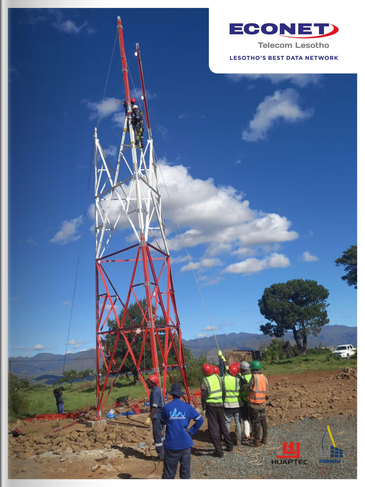

Our Portfolio
Discover the diverse range of projects and initiatives undertaken by Econet Telecom Lesotho:
Project Title 1
In Lesotho, we did a big project called "Project Connect" that changed how people communicate. We wanted to make sure everyone could easily get phone and internet services. Even though we faced challenges like tricky geography and not enough infrastructure, we didn't give up.
We worked hard from the start to finish of "Project Connect." We used the latest technology and smart plans to overcome problems. Now, because of this project, people in cities and faraway places can talk and use the internet better, helping them do more in our connected world.

Project Title 2
Another significant project undertaken by Econet Telecom Lesotho was "Project Empower." This initiative aimed to provide digital literacy and empowerment programs to communities across the country. Through "Project Empower," we sought to equip individuals with the skills and knowledge needed to harness the full potential of telecommunications and internet technologies.
From organizing workshops and training sessions to partnering with local educational institutions and community centers, "Project Empower" aimed to bridge the digital divide by empowering individuals with the tools they need to succeed in the digital age. By focusing on education and capacity building, this project aimed to unlock new opportunities for personal and economic growth for people from all walks of life in Lesotho.